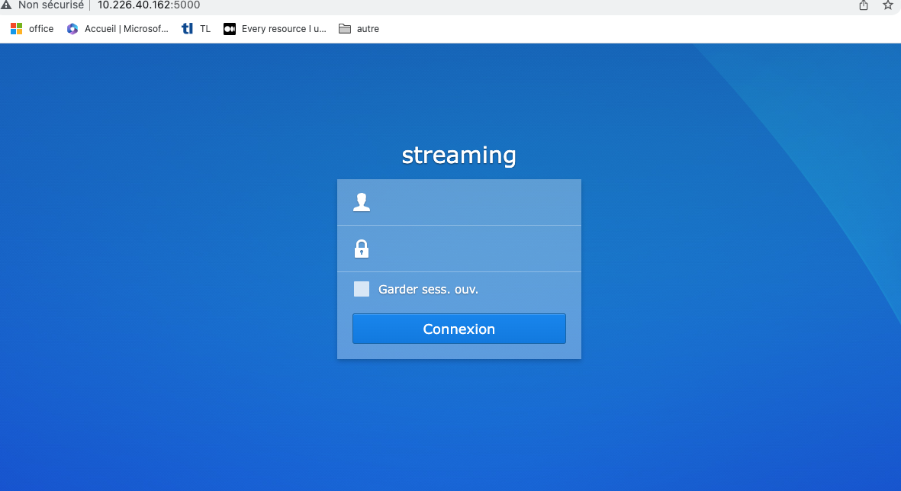
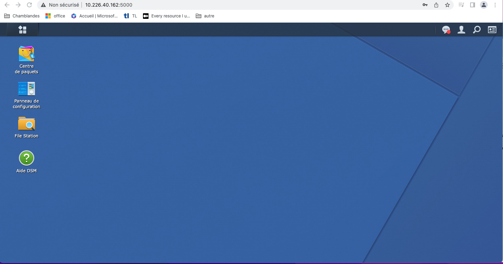
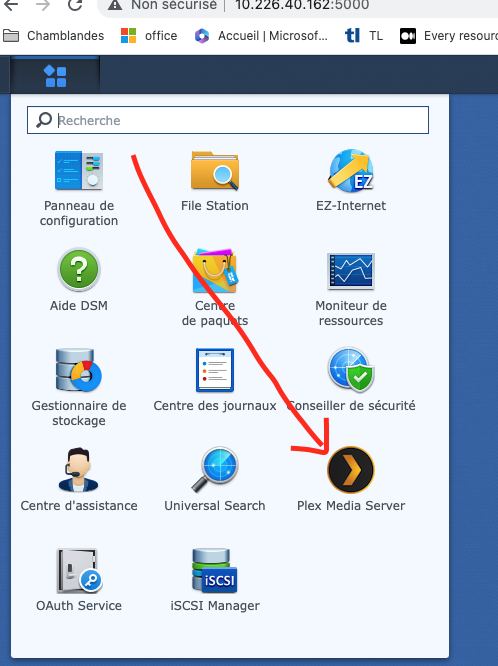
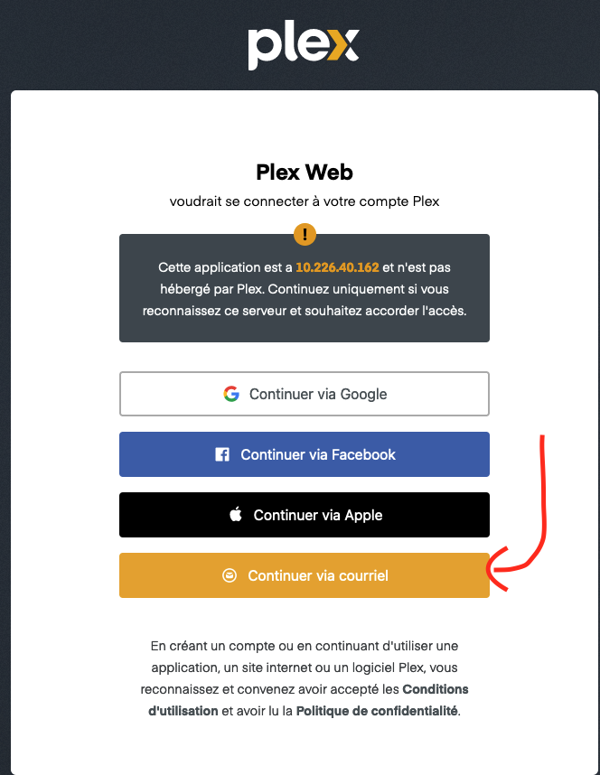
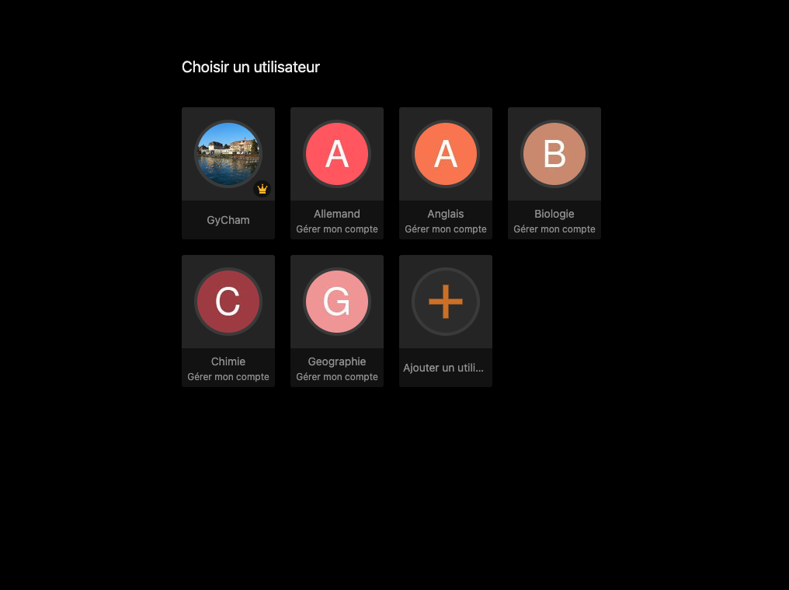
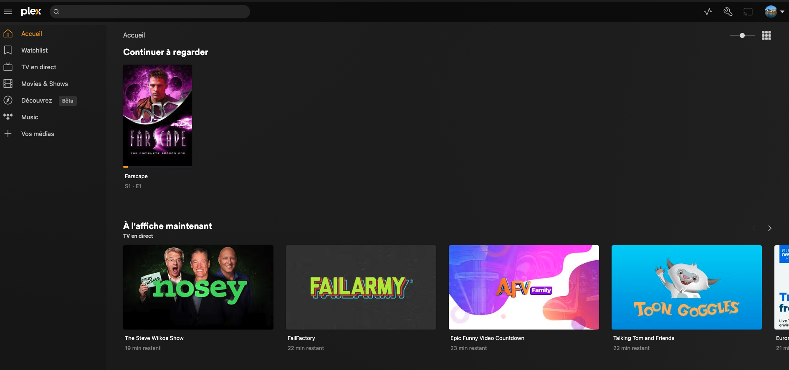

Se connecter au serveur de streaming (Plex)
Contents
Se connecter au serveur de streaming (Plex)#
Plex est un logiciel de gestion multimédia qui ressemble beaucoup a Netflix, sauf que cette fois-ci c’est nous qui mettons les films et les vidéos disponibles sur la plateforme. Pour mettre le contenu que l’on souhaite, il faut justement passer par ce serveur Plex que nous avons à chamblandes.
Se connecter au serveur Plex (Synology)#
Pour se connecter au serveur plex, il faut passer par l’interface du serveur de streaming qui se trouve à cette adresse : http://10.226.40.162:5000/
{kind=link}
Voici les identifiants pour s’y connecter:
Utilisateur: adminl
Mot de passe: S_Gym09
Dès que c’est fait, vous arriverez sur une interface qui ressemble à l’interface d’un OS. c’est l’interface Synology (l’interface du serveur de streaming).
{kind=link}
Ensuite, il faut cliquer sur les carrés en haut à gauche de l’interface et cliquer sur Plex Media Server:
{kind=link}
Après, nous nous retrouverons sur l’interface de plex, ou il faudra se connecter avec un compte sur la plateforme:
{kind=link}
Voici les identifiants pour s’y connecter:
Utilisateur: helpdesk.gycha@eduvaud.ch
Mot de passe: SGymnase18$
Dès que c’est bon, vous arriverez sur une interface ou vous pouvez choisir un compte. Il faut sélectionner le compte GyCham.
{kind=link}
Dés que vous avez cliqué sur le compte gycham, vous devrez arriver sur la page d’accueil de plex:
{kind=link}
Pour ajouter des médias, il faut cliquer sur le bouton Vos médias dans le menu